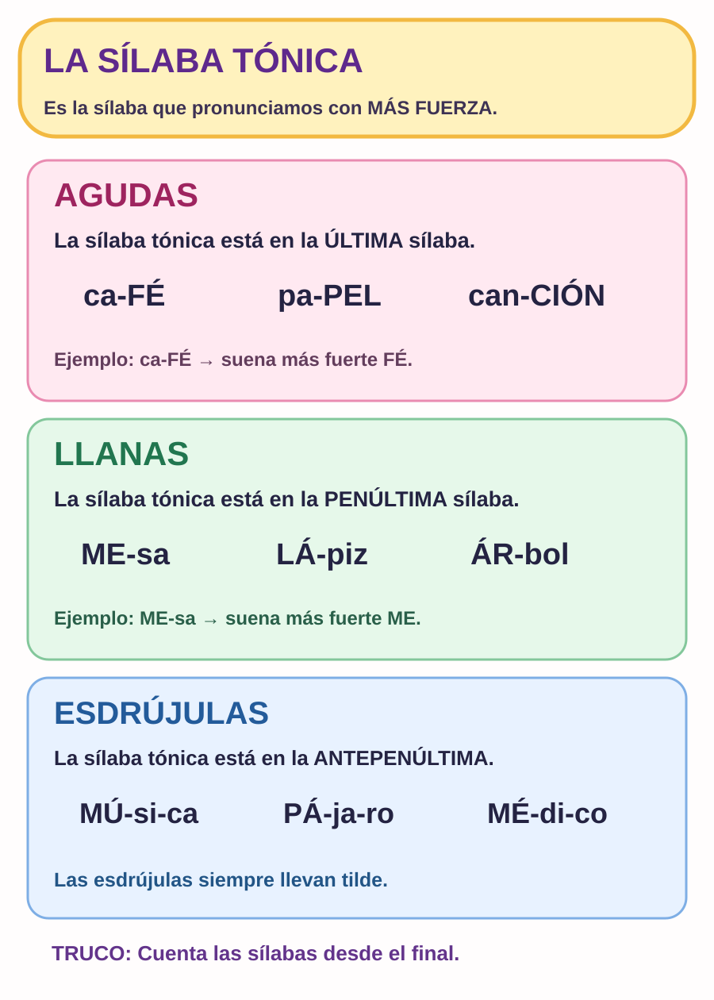
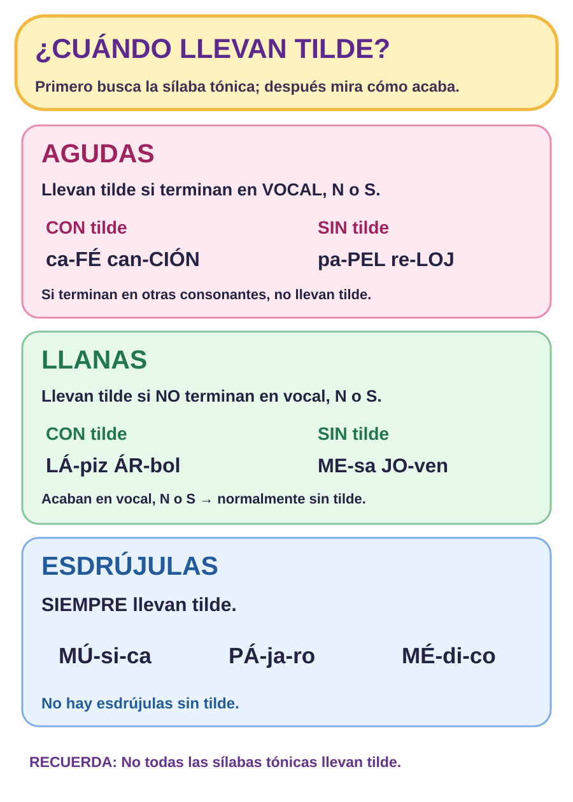
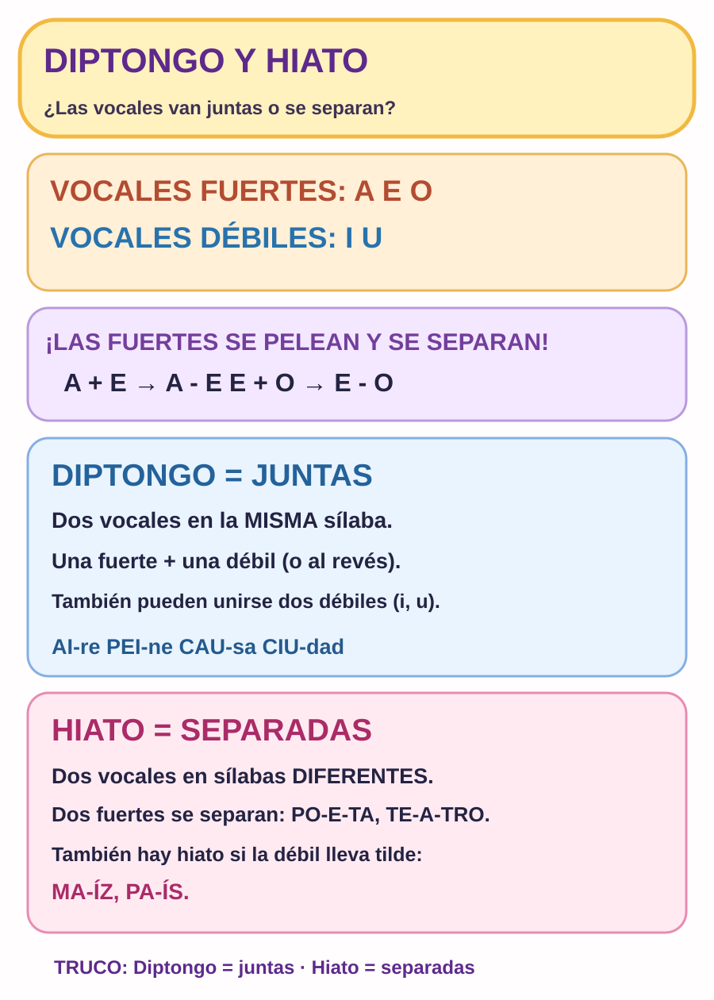
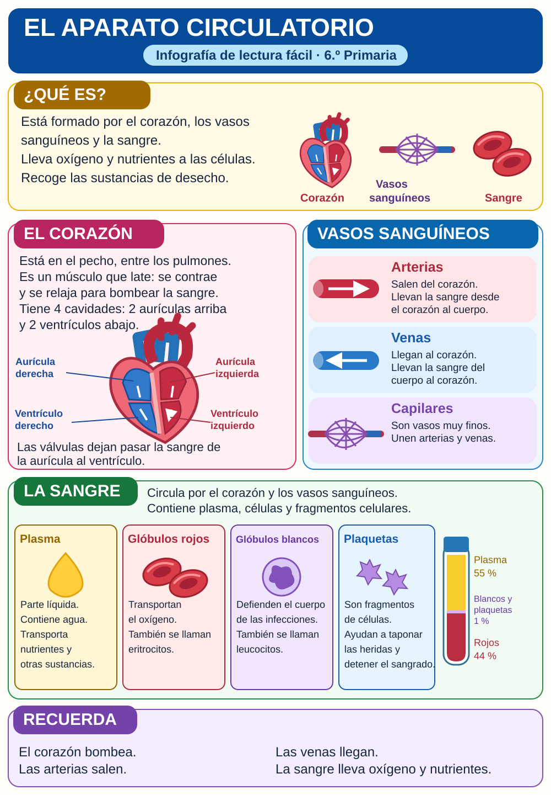

🔎 La sílaba tónica
Clasificación de palabras agudas, llanas y esdrújulas.
📚 RECURSOS ACCESIBLES · PRIMARIA
Infografías con explicaciones breves, ejemplos y apoyos visuales para aprender a tu ritmo. Puedes abrirlas o guardarlas para imprimir.

Clasificación de palabras agudas, llanas y esdrújulas.

Reglas generales con ejemplos con tilde y sin tilde.

Las vocales fuertes se pelean y se separan; ejemplos de diptongos e hiatos.
Lectura fácil bilingüe español-ucraniano, apoyos visuales, audio, vocabulario, comprensión y dibujo libre.

Infografía y aplicación interactiva con 39 actividades: aprendo, comprendo, practico y repaso. Lectura fácil, apoyos visuales y adaptación para alumnado con discapacidad auditiva.